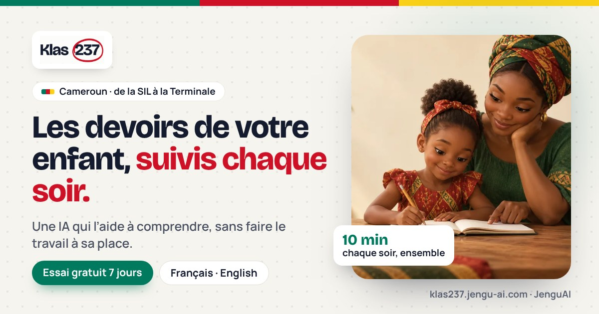

WhatsApp

Klas 237 · Les devoirs de votre enfant, suivis chaque soir
Une IA qui aide votre enfant à comprendre, sans faire le travail à sa place. De la SIL à la Terminale…
klas237.jengu-ai.com
https://klas237.jengu-ai.com
20:04 ✓✓
Facebook
JenguAI
klas237.jengu-ai.com
Klas 237 · Les devoirs de votre enfant, suivis chaque soir
Une IA qui aide votre enfant à comprendre, sans faire le travail à sa place…